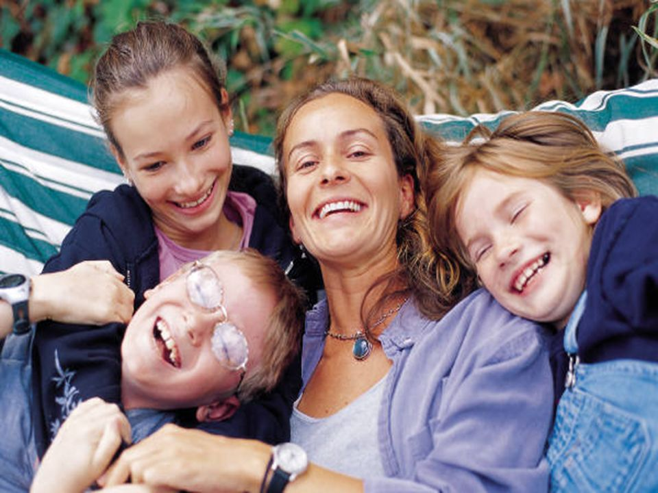

Nome del progetto: Puzzle
Repository del sito di presentazione progetto: PuzzleRepository
Repository del prototipo (codice): Puzzle-code
| Matricola | Cognome | Nome | GitHub | |
|---|---|---|---|---|
| s241844 | Gullotta | Giuseppe | giuseppe.gullotta1994@gmail.com | GiuseppeGullotta |
| s243954 | Scaffidi | Liliana | liliana.scaffidi@gmail.com | LilianaScaffidi |
| s240165 | Siclari | Pamela | pamela.sicl@gmail.com | PamelaSiclari |
Puzzle è il primo Social Network didattico il cui focus non è sui bambini ma sui loro genitori e sul rapporto di questi con gli insegnanti.
Nasce dalla necessità di un genitore di poter essere sempre informato sull’avanzamento didattico del proprio bambino, quindi poter entrare in contatto diretto con gli insegnanti, e dall’idea di una cooperazione con gli altri genitori, abbattendo così muri, ostilità e competizioni che possono influire negativamente sui rispettivi figli.
Il target principale è dunque rappresentato dai genitori di bambini tra i 6 e i 10 anni (frequentanti le scuole elementari), a cui viene data la possibilità di poter interagire tra loro, rimanere informati su ciò che accade ai loro figli durante le lezioni, chiedere consigli o suggerimenti e organizzare attività extra-curriculari (gite, recite scolastiche, gruppi di studio, …). Il fine è far in modo che un supporto tra genitori possa portare a una maggiore collaborazione tra i bambini e renderli, in tal modo, più indipendenti nello studio e nella vita.
Un target secondario è invece rappresentato dagli insegnanti, ai quali è richiesto un minimo supporto ai genitori, dunque poter essere contattati direttamente in chat da quest’ultimi e fornire materiale didattico e collegamenti a materiale extra che possa essere di supporto allo studio dei bambini.
Altri social networks vengono tutt’oggi utilizzati a questi scopi.
Primo fra tutti WhatsApp, utilizzato da molti genitori per tenersi aggiornati sull’avanzamento scolastico dei propri figli, ma che spesso è terreno di pesanti liti e critiche anche nei confronti del corpo docenti. Il problema di fondo, in questo caso, è rappresentato dall’assenza di controllo sui gruppi che porta alla degenerazione di quest’ultimi. Puzzle propone, invece, uno stretto controllo sui contenuti in modo che questi riguardino esclusivamente il mondo scolastico (e non solo) dei bambini.
Un altro competitor è un Social Network italiano, Socloo, che si propone come strumento utile a fini didattici, dove gli insegnanti possono caricare contenuti fruibili dai loro alunni. Tuttavia, questo non aggiunge nulla di più rispetto al Registro Elettronico, ad oggi obbligatorio per tutte le scuole italiane, restando debole sul piano social. Puzzle, pur dando la possibilità di caricare avvisi e contenuti a scopi didattici, mette invece al primo posto la socialità tra utenti, spostando il focus dall’interazione studente-insegnante al duplice rapporto genitore-insegnante e genitore-genitore.
Allontanandoci dal mondo digitale, un nodo fondamentale è rappresentato da tutte le attività extra-scolastiche che generalmente vengono organizzate con il minimo coinvolgimento da parte di tutti i genitori. Puzzle dà loro la possibilità di intervenire direttamente e di proporre nuove attività. Tra queste, i genitori possono ad esempio organizzare gruppi di studio su determinate materie, oppure organizzare attività ricreative di vario genere.
Target principale: genitori di bambini frequentanti la scuola primaria
Target secondario: insegnati della scuola primaria
Da sempre la scuola primaria ha avuto un ruolo decisivo nella formazione, culturale e non, dei bambini.
Tuttavia, negli ultimi anni si sta assistendo ad un cambio di paradigma, che vede i genitori sempre più presenti, e talvolta invadenti, nella formazione scolastica dei propri figli.
I genitori odierni, infatti, stanno assumendo un ruolo sempre più predominante in questo contesto, arrivando anche a svolgere (nella maggior parte dei casi) i compiti al posto dei loro figli, spinti da una costante competizione verso gli altri genitori al fine di far prevalere ognuno il proprio bambino (“il mio cavallo corre più veloce del tuo”). Come se il valore di questi bambini possa essere rappresentato da un mero numero.
In questo quadro socio-demografico, dunque, il tutto assume connotazioni prettamente deleterie: i bambini apprendono il minimo indispensabile, non assumono un metodo di studio adeguato, risultano poco indipendenti e, facendo riferimento alla figura genitoriale, accrescono (in negativo) il loro spirito di competizione, non riuscendo ad acquisire capacità collaborative con i compagni, fondamentali nello studio e nella vita. L’approdo degli “over” alla tecnologia, e in particolar modo a WhatsApp, comporta una degenerazione del fenomeno.
Fonti:
Fenomenologia (poco seria) dei genitori su WhatsApp
Don't help your kids with their homework
I compiti li fanno mamma e papà

|
Francesca - Lavora in uno studio associato di architetti - Ha una bambina di 7 anni ma poco tempo libero da dedicarle in settimana - E’ appassionata d’arte: le piace visitare gallerie, mostre, musei, … insieme alla figlia e al marito nel fine settimana - Ha un ottimo rapporto con tutte le tecnologie |
|  |
Sara - “Mamma” di professione - Dedica tutto il suo tempo ai suoi tre bambini - Si ritaglia del tempo per sé solo per fare jogging o andare in bicicletta - Utilizza il computer per cercare nuove ricette da provare o per aiutare i figli con le ricerche |
|
Antonia - Insegna ai bambini di scuola elementare da 23 anni - Ha due figli ormai grandi: uno è un avvocato, l’altro studia ancora all’università - Ama leggere - Si destreggia bene con le nuove tecnologie |
|

|
Aurora - Ha 31 anni e insegna matematica e scienze alla scuola primaria - Nel tempo libero adora viaggiare con gli amici - Ama stare a contatto con i bambini |
E' venerdì mattina e Francesca scopre solo adesso che nel pomeriggio dovrà recarsi ad un meeting presso la sede di un importante cliente.
Per questo motivo, sa che non farà in tempo ad andare alla riunione genitori-insegnanti prevista per le ore 16 a scuola di sua figlia Alice.
Tra l'altro neanche Mauro, suo marito, potrà andarci perchè si trova fuori città per lavoro.
Durante la pausa pranzo, Francesca va su Puzzle e contatta le insegnanti di inglese e matematica di Alice per sapere come la bambina
ha svolto le ultime verifiche fatte in classe. Va poi nella lista dei genitori dei compagnetti di Alice e chiede loro se qualcuno può farle
il favore di prendere Alice a scuola perchè probabilmente lei non farà in tempo. Francesca finisce di mangiare l'insalata e riceve già la
risposta da parte di un'altra mamma disposta a darle una mano! Le maestre invece non hanno ancora risposto... sa già che passerà del tempo prima
che le faranno sapere qualcosa; ma non importa! Per il momento sa che pomeriggio Alice non resterà a scuola ad aspettare da sola: Francesca può
andare al meeting tranquilla!
Sara è una donna "iperattiva". Adora la sua famiglia e prendersi cura di essa. Ogni pomeriggio aiuta i due figli più grandi (Chiara e Andrea)
a fare i compiti (Tommaso, il più piccolo, è ancora all'ultimo anno di scuola materna).
Da due giorni Chiara è a casa con la febbre, ma Sara ha
tutto sotto controllo e si sta mantenendo aggiornata su quello che viene fatto a scuola in sua assenza attraverso il nuovo social network Puzzle.
Attraverso la sezione "Diario di classe", infatti, sa giornalmente quali sono i contenuti spiegati a lezione, e nella sezione "Spazio genitori" trova
tanto materiale utile per far svolgere i compiti ai suoi figli. Oggi Chiara sta un po' meglio, probabilmente domani tornerà a scuola!
Lunedì ci sarà la verifica in classe di inglese... Sara sta già pensando di organizzare un gruppo di studio per questo fine settimana perchè sa che il
modo migliore per imparare una lingua è attraverso il dialogo e la condivisione con gli altri! Crea allora in Puzzle un evento "casa", a cui
potranno partecipare tutti i compagnetti di Chiara che vorranno. Sa che riuscirà a gestirli perchè una sua amica (laureata in lingue, peraltro) le ha
promesso che le avrebbe dato una mano. Preparerà una ciambella probabilmente. E i bambini impareranno divertendosi e socializzando tra loro! Ovviamente
anche Andrea e Tommaso si intrufoleranno tra i "grandi"... ma alla fine non è mai troppo presto per imparare l'inglese!
Dopo tanti anni di insegnamento alle spalle, Antonia ha imparato che la collaborazione tra genitori e insegnanti è fondamentale durante il
percorso scolastico dei bambini. Per questo motivo ha consigliato ai genitori dei suoi alunni di iscriversi a Puzzle, perchè attraverso questa
nuova piattaforma li rende partecipi di ciò che viene fatto in aula giornalmente. Lo trova un modo più diretto e stimolante e, qualora senta la necessità
di parlare con un genitore, lo contatta direttamente senza dover passare dalla segreteria scolastica. Nonostante non sia più giovanissima, ad Antonia piace
tenersi aggiornata circa le nuove tecnologie... aveva già iniziato ad utilizzare il Registro Elettronico un annetto fa, ma lo sentiva poco "vicino" ai
genitori. Per non parlare poi del sito istituzionale della scuola: abbastanza datato e poco pratico! Su Puzzle invece, oltre raccontare (anche in
modo informale) la giornata scolastica, si diverte talvolta a pubblicare le foto fatte con gli alunni durante le gite scolastiche! Non esistono più le
comunicazioni fredde e distaccate attraverso un avviso lasciato sul diario scolastico! Considera i suoi alunni anche un po' figli suoi... e su
Puzzle si sente come appartenente ad una grande famiglia!
Aurora insegna alle elementari da pochissimo tempo. Essendo molto giovane, le piace l'idea di una didattica innovativa, che possa essere più vicina
all'organizzazione scolastica che i bambini incontreranno in futuro durante il loro percorso. Pensa che i libri non siano l'unico mezzo utile
all'apprendimento e che i bambini imparino meglio quando sono più stimolati. Quando spiega un nuovo argmento di scienze, Aurora va alla ricerca su Internet
di qualche video carino che tratti l'argomento, e lo carica tra il suo materiale didattico in Puzzle, in modo che i genitori possano accedervi e
farlo vedere liberamente ai propri figli. Ogni tanto crea anche qualche evento "scuola", organizzando dei piccoli "esperimenti" in classe anche con la
partecipazione dei genitori che lo desiderano.
Ieri sera Aurora, dopo essere stata contattata da più genitori in difficoltà nello far svolgere degli esercizi per casa ai propri figli, ha preso il suo
smartphone e ha registrato un video in cui spiegava i passaggi più significativi dell'ostico esercizio su un foglio di carta, e lo ha caricato tra il suo
materiale sul sito. Dopo solo un'ora, ha ricevuto un messaggio di ringraziamento da parte di una mamma a nome di tutti i genitori... e una collega stamattina le ha
detto che probabilmente le "ruberà" l'idea!
Targert principale: GENITORI
| Funzionalità complete | Descrizione |
|---|---|
| Organizza gruppi di studio ed eventi | Il genitore può organizzare gruppi di studio, fornendo il proprio supporto ai bambini in una determinata materia e/o organizzare eventi sia scolastici, in cui rendere partecipi gli altri genitori (mercatini di Natale, feste, recite), sia extra-scolastici (serate tra genitori/insegnati ecc..) |
| Chiedi aiuto o supporto ad altri genitori | Il genitore può contattare gli altri genitori per richiedere qualsiasi tipo di "supporto" (passaggio a scuola ecc) e/o informazione |
| Contatta l'insegnante | Il genitore può contattare l'insegnante in maniera "asincrona" (non sfruttando una chat diretta) |
| Chiedi consiglio ad un esperto | Il genitore può richiedere consulenza ad un esperto (psicologo, sessuologo ecc) nel caso in cui lo ritenga necessario per il proprio figlio |
Targert secondario: INSEGNANTI
| Funzionalità complete | Descrizione |
|---|---|
| Condividi la tua giornata in classe | L'insegnante può giornalmente tenere informati i genitori su ciò che è accaduto in classe |
| Condividi materiale didattico | L'insegnante può caricare del supporto didattico per i propri alunni |
Con "(*)" sono indicate le funzionalità uguali sia per genitori che per insegnanti
Targert principale: GENITORI
| Macroarea | Funzionalità specifica | Descrizione | To do |
|---|---|---|---|
| Accesso | Login | Accesso alla homepage | SI |
| Registrazione | Registrazione - passo 1 (*) | Inserimento dei propri dati social: caricamento immagine personale, email, password | SI |
| Registrazione - passo 2 (*) | Inserimento dei propri dati anagrafici: nome, cognome, sesso, città | SI | Registrazione - passo 3 | Inserimento dei propri dati scuola: nome figlio, cognome figlio, scuola, classe, con possibilità di aggiungere più figli | SI (NO aggiunta figlio ulteriore) |
| Homepage | Lista Insegnanti - Contatta (*) | Lista di insegnanti dalla quale sarà possibile accedere ai profili degli Insegnanti (con la possibilità dunque di contattarli tramite chat "asincrona") | SI lista, NO contatta |
| Lista Genitori - Contatta (*) | Lista di genitori ai quali viene associato il nome del proprio figlio, con possibilità di contattarli tramite chat "asincrona" | SI lista, NO contatta | |
| Visualizzazione dei post pubblicati dagli insegnanti (*) | Il genitore potrà visualizzare giorno dopo giorno i post che verranno pubblicati dai vari insegnanti | SI | |
| Calendario (*) | Visualizzazione data odierna con possibilità di aprire il calendario e selezionare una data diversa (per risalire a post datati) | SI data odierna, NO post datati | |
| Eventi (*) | Tramite questo pulsante, l'utente ha accesso all'area dedicata agli eventi | SI | |
| Promemoria - notifica eventi (*) | In questa sezione l'utente visualizza tutti gli eventi del giorno (sia quelli a cui partecipa, sia quelli a cui non partecipa) | NO | |
| Eventi | Calendario (*) | Nel calendario saranno evidenziati con colori diversi i giorni nei quali è programmato un evento (3 colori diversi per 3 tipologie di eventi diversi) Schiacciando su un determinato giorno, si visualizza l'evento relativo a tale giorno, con descrizione annessa. Di default, viene visualizzato l'evento relativo alla data odierna | SI |
| Partecipa all'evento (*) | Agli eventi ai quali si è stati invitati, sotto la descrizione dell'evento, è associato il tasto Partecipa (si aggiornerà in tal modo la sezione "eventi a cui si parteciperà" nella pagina personale dell'utente) | NO | |
| Crea evento (*) | L'utente ha la possibilità di creare un evento, e di specificarlo al passo successivo | SI | |
| Crea evento "Scuola" (*) | Il genitore può organizzare eventi relativi alla scuola (mercatini di Natale, gite scolastiche, recite ecc ecc ), scegliendo di poterli condividere con gli insegnanti o i genitori | SI | |
| Crea evento "Casa" | Il genitore può organizzare gruppi di studio a casa propria, fornendo il proprio supporto ai bambini in una determinata materia | SI | |
| Crea evento "Extra" | Il genitore può organizzare eventi esterni alla scuola (partite a calcetto, incontri tra genitori/insegnanti, ecc ecc), scegliendo di poterli condividere con gli insegnanti o i genitori | SI | |
| Condividi evento con - notifica invito evento (*) | L'utente può, prima di finalizzare la creazione di un evento, scegliere di condividerlo con solo gli insegnanti, solo i genitori, o entrambi. In base a tale scelta, verrà inviata la notifica al relativo tipo di utente (nella sezione news eventi della pagina personale) | NO | |
| Profilo Personale | Visualizzazione informazioni personali (*) | Verranno visualizzate alcune delle informazioni che l'utente ha inserito nella fase di registrazione | SI |
| Notifiche Eventi (*) | L'utente visualizza gli eventi sia a cui è stato invitato (sezione "eventi a cui sono stato invitato"), sia gli eventi a cui ha deciso di partecipare (sezione "eventi a cui parteciperò") | NO | |
| Chiedi aiuto ad un esperto | Il genitore potrà chiedere l'aiuto di un esperto (psicologo, sessuologo...) qualora lo ritenesse necessario per il proprio figlio | NO | |
| Spazio genitori | Tramite il pulsante "spazio genitori", il genitore potrà accedere allo spazio di condivisione file a cui hanno accesso solo i genitori | SI | |
| Area spazio genitori | In questa area, i genitori potranno condividere tra loro documenti e immagini vari | SI |
Targert secondario: INSEGNANTI
| Macroarea | Funzionalità specifica | Descrizione | To do |
|---|---|---|---|
| Accesso | Login | Accesso alla homepage | SI |
| Registrazione | Registrazione - passo 1 (*) | Inserimento dei propri dati social: caricamento immagine personale, email, password | SI |
| Registrazione - passo 2 (*) | Inserimento dei propri dati anagrafici: nome, cognome, sesso, città | SI | |
| Registrazione - passo 3 | Inserimento dei propri dati scuola: scuola, classe, materie, con possibilità di aggiungere più classi/materie | SI (NO aggiunta classi/materie ulteriori) | |
| Homepage | Lista Insegnanti - Contatta (*) | Lista di insegnanti dalla quale sarà possibile accedere ai profili degli Insegnanti (con la possibilità dunque di contattarli tramite chat "asincrona") | SI lista, NO contatta |
| Lista Genitori - Contatta (*) | Lista di genitori ai quali viene associato il nome del proprio figlio, con possibilità di contattarli tramite chat "asincrona" | SI lista, NO contatta | |
| Visualizzazione dei post pubblicati dagli insegnanti (*) | Il genitore potrà visualizzare giorno dopo giorno i post che verranno pubblicati dai vari insegnanti | SI | |
| Scrittura dei post | L'insegnante aggiorna il diario giornalmente pubblicando dei post realitivi a ciò che è stato fatto in aula | SI | |
| Calendario (*) | Visualizzazione data odierna con possibilità di aprire il calendario e selezionare una data diversa (per risalire a post datati) | SI data odierna, NO post datati | |
| Eventi (*) | Tramite questo pulsante, l'utente ha accesso all'area dedicata agli eventi | SI | |
| Promemoria - notifica eventi (*) | In questa sezione l'utente visualizza tutti gli eventi del giorno (sia quelli a cui partecipa, sia quelli a cui non partecipa) | NO | |
| Eventi | Calendario (*) | Nel calendario saranno evidenziati con colori diversi i giorni nei quali è programmato un evento (3 colori diversi per 3 tipologie di eventi diversi) Schiacciando su un determinato giorno, si visualizza l'evento relativo a tale giorno, con descrizione annessa. Di default, viene visualizzato l'evento relativo alla data odierna | SI |
| Partecipa all'evento (*) | Agli eventi ai quali si è stati invitati, sotto la descrizione dell'evento, è associato il tasto Partecipa (si aggiornerà in tal modo la sezione "eventi a cui si parteciperà" nella pagina personale dell'utente) | NO | |
| Crea evento (*) | L'utente ha la possibilità di creare un evento, e di specificarlo al passo successivo | SI | |
| Crea evento "Scuola" (*) | Il genitore può organizzare eventi relativi alla scuola (mercatini di Natale, gite scolastiche, recite ecc ecc ), scegliendo di poterli condividere con gli insegnanti o i genitori | SI | |
| Condividi evento con - notifica invito evento (*) | L'utente può, prima di finalizzare la creazione di un evento, scegliere di condividerlo con solo gli insegnanti, solo i genitori, o entrambi. In base a tale scelta, verrà inviata la notifica al relativo tipo di utente (nella sezione news eventi della pagina personale) | NO | |
| Profilo Personale | Visualizzazione informazioni personali (*) | Verranno visualizzate alcune delle informazioni che l'utente ha inserito nella fase di registrazione | SI |
| Notifiche Eventi (*) | L'utente visualizza gli eventi sia a cui è stato invitato (sezione "eventi a cui sono stato invitato"), sia gli eventi a cui ha deciso di partecipare (sezione "eventi a cui parteciperò") | NO | |
| Materiale didattico - visualizza | Gli insegnanti e i genitori potranno visualizzare il materiale didattico caricato dal docente | SI | Materiale didattico - carica materiale | L'insegnante avrà la possibilità di caricare del materiale didattico extra nella sezione "materiale didattico" | SI |
| Materiale didattico - carica immagine | L'insegnante potrà condividere immagini o foto | SI | |
| Materiale didattico - carica documento | L'insegnante potrà condividere documenti utili ai fini didattici (svolgimento di determinati esercizi, ...) | SI | |
| Materiale didattico - carica video | L'insegnante potrà condividere video (per far capire il metodo di spiegazione utilizzato in aula, per approfondire determinati argomenti trattati a lezione, ...) | SI |

Inserire il mockup realizzato con Balsamiq
Inserire il video di "promozione" del vostro social network
Descrizione sintetica di tutte le caratteristiche degli utenti che hanno partecipato alla valutazione del prototipo. Tale descrizione deve necessariamente contenere almeno il numero degli utenti, l'età, il genere e le caratteristiche rilevanti nel caso specifico del vostro social network (ad esempio il corso di studio e l'anno se studenti, oppure la professione, oppure gli interessi, ...)
Questa sezione deve contenere gli strumenti usati durante la valutazione (questionari e/o traccia delle interviste)
Questa sezione deve contenere la sintesi dei risultati della valutazione, possibilmente in forma di grafici
Questa sezione deve contenere una breve analisi degli eventuali problemi riscontrati durante la valutazione e le modifiche da implementare nella (ipotetica) seconda versione del prototipo